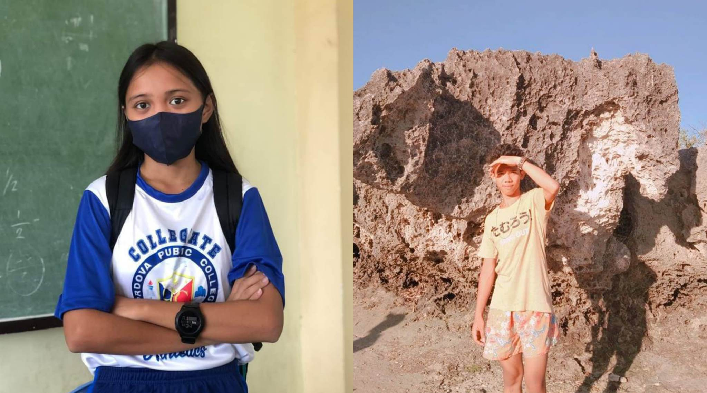

Home
Activities
About Us
Contact Us

(Johanna) My friends say that I am a very funny and an interesting girl with a good sense of humor. As soon as I meet new people who are happy to meet me, I feel extremely comfortable with them. I believe that friendship is one of the most important values in human life. We exchange new ideas, find many interesting things about each other and experience new things. I appreciate friendship and people who surround me.
(Teresito) I can say that I am a responsible and a hard-working student. Moreover, being a sociable person, I have many friends since I like to communicate with people and get to know new interesting individuals. I enjoy my time at school: it is really nice to study, the students are very friendly and ready to help. The atmosphere cannot but make me want to go there every time. I like to receive and deal with challenging tasks. I am a very enthusiastic student and I think this is a strong point of mine.